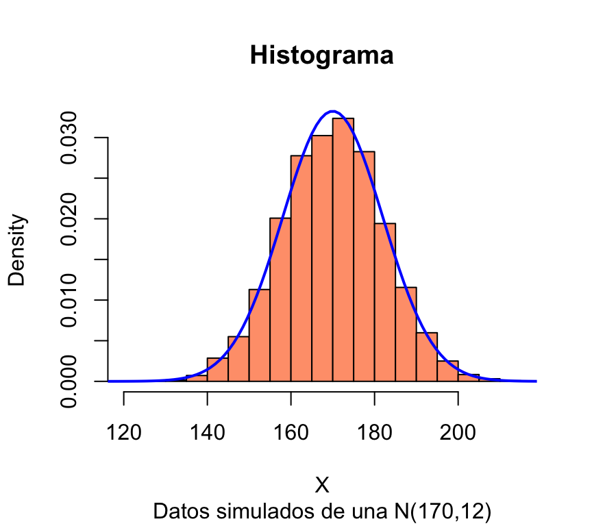
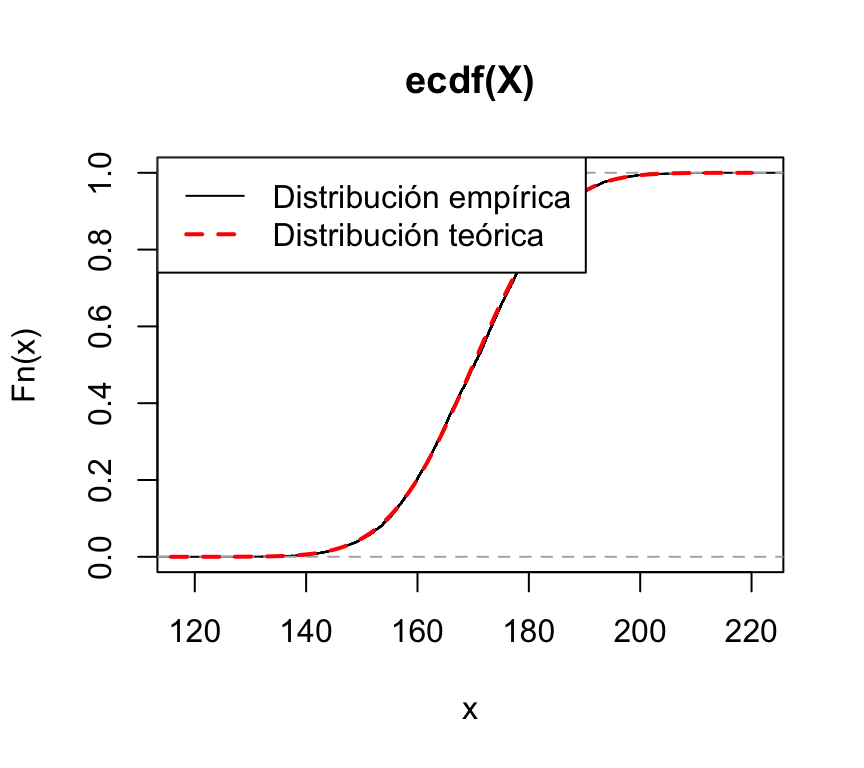
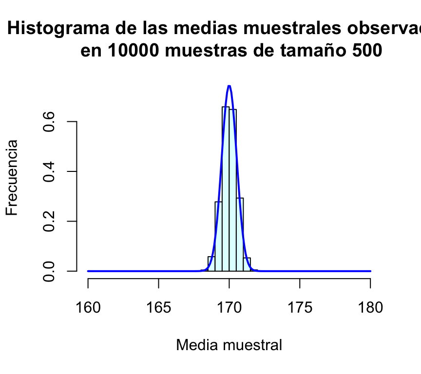

Estadística descriptiva en R
1 Estadística Descriptiva con R
Vamos a trabajar sobre 10 personas:
edad=c(18,19,NA,18,24,17,22,15,22,25)
sexo=c(0,1,0,0,1,0,0,1,1,0)
estudios=c(1,2,0,1,3,2,3,1,2,3)
sexo=factor(sexo, levels=c(0,1),
labels=c("Hombre","Mujer"))
estudios=factor(estudios, levels=c(0,1,2,3),
labels=c("Sin estudios","Estudios Primarios",
"Estudios Secundarios","Estudios Superiores"))Con esos datos, nos interesa:
Construir tablas de frecuencias unidimensionales para las tres variables.
Construir una tabla de frecuencias cruzadas con las variables ‘sexo’ y ‘nivel de estudios’.
Construir una tabla de frecuencias de la variable edad agrupada en intervalos.
Calcular media y desviación típica de la variable ‘edad’.
Calcular media y desviación típica de la variable ‘edad’ según sexo.
Representar gráficamente: el nivel de estudios en un diagrama de sectores, el sexo en un diagrama de barras y la edad en un histograma. Construir también un boxplot de la edad en función del sexo.
1.1 Tablas de frecuencias unidimensionales
table(edad) #tabla de frecuencias absolutas.
prop.table(table(edad)) #tabla de frecuencias relativas.
table(edad,useNA="ifany") #tabla que incluye el conteo de valores perdidos.Tarea:
Constuir tablas de frecuencias para las variables sexo y Nivel de estudios.
1.2 Tablas de frecuencias cruzadas
Las tablas de frecuencias cruzadas se construyen también con las funciones table() y prop.table(table()), especificando ahora las dos variables a cruzar. Para las frecuencias relativas, en prop.table() incluimos un 1 si las queremos por filas, un 2 si por columnas, o nada si queremos las frecuencias relativas globales:
table(estudios,sexo)
prop.table(table(estudios,sexo))
prop.table(table(estudios,sexo),1)
prop.table(table(estudios,sexo),2)1.3 Tabla de frecuencias de una variable continua agrupada en intervalos
Para conocer el rango de edad de nuestras 10 personas, usamos la función:
range(edad, na.rm = TRUE) # na.rm = TRUE indica que ignore los valores perdidos.1.4 Creación de intervalos
En este caso, para la creación de intervalos, vamos a usar la regla de Sturges, que nos proporciona un número adecuado de intervalos en función del rango de los datos (ver help(nclass.Sturges).
Si quisieramos agrupar a las personas por intervalos según su edad:
nclass.Sturges(edad) # Número de intervalos
seq(15,25,length=nclass.Sturges(edad)) # Límites de los intervalos
# Construcción de los intervalos mediante la función cut():
intervalosEdad=cut(edad,breaks=seq(15,25,length=nclass.Sturges(edad)),include.lowest=TRUE)
intervalosEdad # Se muestran los intervalos de edad, uno correspondiente a cada edad observada
table(intervalosEdad)La función seq() se utiliza para generar un listado de números con el formato:
seq.int(from, to, by)Ejemplo:
seq(1,10,2)1.4.1 Estadísticos descriptivos
Calcular media y desviación típica de la variable ‘edad’.
R dispone de una función genérica summary(), que cuando se aplica a una variable presenta un pequeño resumen descriptivo. Si la variable es numérica, dicho resumen incluye el mínimo, máximo, mediana, primer y tercer cuartiles, media y número de valores perdidos. Si la variable es de tipo factor, summary() muestra el número de observaciones en cada nivel del factor:
summary(edad)
summary(estudios)Las funciones disponibles en R para calcular estos estadísticos descriptivos son, respectivamente, mean(nombre_de_variable) y sd(nombre_de_variable):
mean(edad, na.rm=T)
sd(edad, na.rm=T)1.4.2 Representaciones gráficas
pie(table(estudios))
barplot(table(sexo))
hist(edad)
boxplot(edad~sexo)Tarea:
- Ejecuta
help(pie)y busca cómo agregar un título al gráfico. - Colorea los sectores de modo diferente: utiliza la opción col=c(“red”,“blue”,“green”,“yellow”)
2 Distribuciones de probabilidad en R
2.1 Distribuciones de probabilidad en R
El paquete stats de R (que se instala por defecto al instalar R, y se carga en memoria siempre que iniciamos sesión) implementa numerosas funciones para la realización de cálculos asociados a distintas distribuciones de probabilidad. Entre las utilizadas más comunmente podemos citar:
| Distribuciones Discretas | Distribuciones Continuas | |||
|---|---|---|---|---|
| Distribución | Nombre en R | Distribución | Nombre en R | |
| ——————- | ————- | — | ————— | ————- |
| Binomial | binom | Uniforme | unif | |
| Poisson | pois | Normal | norm | |
| Geométrica | geom | t Student | t | |
| Hipergeométrica | hyper | F Fisher | F | |
| Binomial Negativa | nbinom | Chi-Cuadrado | chisq | |
| Exponencial | exp | |||
| Gamma | gamma | |||
| Weibull | weibull | |||
| W de Wilcoxon | wilcox |
Para cada distribución, R dispone de cuatro funciones. Se puede acceder a cada una de ellas simplemente precediendo el nombre de la distribución que figura en la tabla anterior por la letra que se indica a continuación:
d: función de densidad o de probabilidad. p: función de distribución q: función para el cálculo de cuantiles. r: función para simular datos con dicha distribución.
Así, por ejemplo, para la distribución normal, la función de densidad se obtiene como dnorm(), la función de distribución como pnorm(), los cuantiles se calculan mediante qnorm() y se pueden generar valores aleatorios con distribución normal mediante rnorm(). Puede consultarse la ayuda, help(dnorm) para conocer la sintaxis específica de estas funciones.
Ejemplo 1: distribución binomial
Si X sigue una distribución binomial B(n,p), entonces:
P(X=k) = dbinom(k,n,p)
P(X≤k) = pbinom(k,n,p)
qa = min{x:P(X≤x)≥a} = qbinom(a,n,p)
`rbinom(m,n,p)` genera m valores aleatorios con esta distribuciónSi X≈B(10,0.6) tenemos:
P(X=8)
dbinom(8,10,0.6)## [1] 0.1209324P(X≤8)
pbinom(8,10,0.6)## [1] 0.9536426Podemos representar fácilmente la función de probabilidad de la distribución binomial:
plot(dbinom(0:10,10,0.6),type="h",xlab="k",ylab="P(X=k)",main="Función de Probabilidad B(10,0.6)")También podemos representar su función de distribución:
plot(stepfun(0:10,pbinom(0:11,10,0.6)),xlab="k",ylab="F(k)",main="Función de distribución B(10,0.6)")Ejemplo2: Distribución normal.
Si X sigue una distribución normal N(μ,σ), entonces:
f(x) =dnorm(x,mu,sigma)
P(X≤k) =pnorm(x,mu,sigma)
qa=min{x:P(X≤x)≥a} =qnorm(a,mu,sigma)
rnorm(n,mu,sigma)genera n valores aleatorios N(μ,σ)
Supongamos que X≈N(170,12). Entonces:
Calculamos f(178)
dnorm(171,170,12)## [1] 0.03312996Podemos calcular fácilmente los valores de la función de densidad sobre una secuencia de valores de x:
x=seq(165,175,by=0.5)
dnorm(x,170,12)## [1] 0.03048103 0.03098792 0.03144860 0.03186077 0.03222234 0.03253150 0.03278664 0.03298647
## [9] 0.03312996 0.03321634 0.03324519 0.03321634 0.03312996 0.03298647 0.03278664 0.03253150
## [17] 0.03222234 0.03186077 0.03144860 0.03098792 0.03048103La representación gráfica de la función de densidad se obtiene fácilmente como:
curve(dnorm(x,170,12),xlim=c(130,210),col="blue",lwd=2,
xlab="x",ylab="f(x)",main="Función de Densidad N(170,12)")También podemos representar la función de distribución:
curve(pnorm(x,170,12),xlim=c(130,210),col="blue",lwd=2,
xlab="x",ylab="F(x)",main="Función de Distribución N(170,12)")Calculamos la probabilidad P(X≤180)
pnorm(180,170,12)## [1] 0.7976716P(X>168)
1-pnorm(168,170,12)## [1] 0.5661838# o
pnorm(168,170,12, lower.tail=FALSE)## [1] 0.5661838P(150≤X≤168)
pnorm(168,170,12)-pnorm(150,170,12)## [1] 0.3860258# o
miDensidad=function(x) dnorm(x,170,12)
integrate(miDensidad,150,168)## 0.3860258 with absolute error < 4.3e-15No es demasiado difícil representar el área correspondiente a la probabilidad que se acaba de calcular:
regionX=seq(150,168,0.01) # Intervalo a sombrear
xP <- c(150,regionX,168) # Base de los polígonos que crean el efecto "sombra"
yP <- c(0,dnorm(regionX,170,12),0) # Altura de los polígonos sombreados
curve(dnorm(x,170,12),xlim=c(130,210),yaxs="i",ylim=c(0,0.035),ylab="f(x)",
main='Densidad N(170,12)')
polygon(xP,yP,col="orange1")
box()Simulamos una muestra grande de la distribución normal y comprobamos que el histograma es muy parecido a la función de densidad:
X=rnorm(10000, 170, 12)
hist(X,freq=FALSE,col="lightsalmon",main="Histograma",sub="Datos simulados de una N(170,12)")
curve(dnorm(x,170,12),xlim=c(110,220),col="blue",lwd=2,add=TRUE)
Podemos comprobar también que la distribución acumulativa empírica de esta simulación es muy similar a la función de distribución teórica de la normal:
plot(ecdf(X))
curve(pnorm(x,170,12),xlim=c(110,220),col="red",lwd=2,lty=2,add=TRUE)
legend("topleft",lty=c(1,2),lwd=c(1,2),col=c("black","red"),legend=c("Distribución empírica","Distribución teórica"))
2.2 Distribución de la media en el muestreo. Teorema central del límite.
R es una herramienta excelente para ayudar a entender el significado de muchos conceptos estadísticos. Un concepto a menudo mal entendido es el de la distribución de un estadístico en el muestreo. Para aclarar este concepto podemos comenzar por realizar un sencillo experimento: tomar una muestra aleatoria simple en una población normal de, por ejemplo, media μ=170 y desviación típica σ=12. Fijamos inicialmente un tamaño de muestra n=25, tomamos la muestra y calculamos su media:
n=25
muestra1=rnorm(n,170,12)
media1=mean(muestra1)
media1## [1] 173.1465En esta muestra hemos obtenido un valor medio muestral de 172.2. Si repetimos el proceso obtenemos otra media distinta:
muestra2=rnorm(n,170,12)
media2=mean(muestra2)
media2## [1] 173.7908Y si volvemos a repetir:
muestra3=rnorm(n,170,12)
media3=mean(muestra3)
media3## [1] 167.6527En este punto el lector habrá observado que cada vez que se toma una muestra se obtiene una media diferente. Como a priori es imposible predecir en cada muestreo cuál será el valor medio resultante, la media muestral es una variable aleatoria. El lector habrá observado también que las medias muestrales se parecen a la media de la población, μ=170. Cabe preguntarse entonces: ¿tenderá la media muestral a comportarse de esta manera en todas las muestras? ¿Cuánto llega a apartarse de la media de la población?
Para responder a estas preguntas podemos repetir el proceso anterior no tres, sino muchísimas más veces. En R esto es muy sencillo de hacer. Una forma muy eficiente de replicar muchas veces el proceso anterior consiste en encapsular el proceso de muestreo en una función que haremos depender del tamaño de la muestra:
mediaMuestral=function(n){
muestra=rnorm(n,170,12)
media=mean(muestra)
return(media)
}Cada vez que ejecutemos esta función estaremos eligiendo una muestra de tamaño n de esa población N(170,12) y calculando su media:
mediaMuestral(25)## [1] 172.7419mediaMuestral(25)## [1] 170.9404mediaMuestral(25)## [1] 168.0845Para repetir m veces el proceso de extraer una muestra de tamaño n y calcular su media podemos utilizar la función replicate():
m=10000
muchasMedias=replicate(m,mediaMuestral(25))Las primeras 20 medias obtenidas en esta simulación son:
muchasMedias[1:20]## [1] 166.9483 169.7471 173.6371 170.4525 168.3323 170.0925 168.3722 171.2816 171.1972 168.0472
## [11] 172.4024 167.4844 168.4164 167.3522 175.2647 178.5108 169.0259 169.8683 169.0317 165.6430La media y desviación típica de todas estas medias muestrales son:
mean(muchasMedias)## [1] 169.9677sd(muchasMedias)## [1] 2.435553Por último, representamos gráficamente la distribución de frecuencias de estas medias muestrales mediante un histograma, al que le superponemos una densidad normal:
hist(muchasMedias,xlab="Media muestral", ylab="Frecuencia", col="lightcyan",
xlim=c(160,180),freq=FALSE,ylim=c(0,0.75),
main="Histograma de las medias muestrales observadas\n en 10000 muestras de tamaño 25")
curve(dnorm(x,170,sd(muchasMedias)),xlim=c(160,180),col="blue",lwd=2,add=TRUE) 
A estas alturas, para el lector debe de haber quedado claro que la media muestral es una variable aleatoria, y que su distribución de probabilidad es muy parecida a la normal; además la media de todas las medias muestrales es casi idéntica a la media de la población.
¿Cuál es el efecto de aumentar el tamaño de la muestra? Podemos evaluarlo repitiendo el proceso anterior para n=50, n=100 y n=500 (en todos los casos presentaremos los gráficos en la misma escala para facilitar la comparación):
muchasMedias50=replicate(m,mediaMuestral(50))
muchasMedias100=replicate(m,mediaMuestral(100))
muchasMedias500=replicate(m,mediaMuestral(500))
mean(muchasMedias50); sd(muchasMedias50)## [1] 170.0021## [1] 1.691024mean(muchasMedias100); sd(muchasMedias100)## [1] 170.0088## [1] 1.207658mean(muchasMedias500); sd(muchasMedias500)## [1] 169.989## [1] 0.533279hist(muchasMedias50,xlab="Media muestral", ylab="Frecuencia", col="lightcyan",
xlim=c(160,180),freq=FALSE,ylim=c(0,0.75),
main="Histograma de las medias muestrales observadas\n en 10000 muestras de tamaño 50")
curve(dnorm(x,170,sd(muchasMedias50)),xlim=c(160,180),col="blue",lwd=2,add=TRUE)hist(muchasMedias100,xlab="Media muestral", ylab="Frecuencia", col="lightcyan",
xlim=c(160,180),freq=FALSE,ylim=c(0,0.75),
main="Histograma de las medias muestrales observadas\n en 10000 muestras de tamaño 100")
curve(dnorm(x,170,sd(muchasMedias100)),xlim=c(160,180),col="blue",lwd=2,add=TRUE)hist(muchasMedias500,xlab="Media muestral", ylab="Frecuencia", col="lightcyan",
xlim=c(160,180),freq=FALSE,ylim=c(0,0.75),
main="Histograma de las medias muestrales observadas\n en 10000 muestras de tamaño 500")
curve(dnorm(x,170,sd(muchasMedias500)),xlim=c(160,180),col="blue",lwd=2,add=TRUE,n=200)
Resulta evidente en las gráficas, que el incremento del tamaño de la muestra tiene como consecuencia que las posibles medias muestrales se concentran más en torno a su media; en otras palabras, cuanto más grande sea la muestra, más probable es que la media de la muestra esté muy cerca de la media de la población. Puede comprobarse además que la desviación típica de las medias muestrales es en todos los casos un valor muy parecido a σ/√n=12/√n:
| Tamaño de muestra (n) | Desviación típica de las medias muestrales | σ/√n |
|---|---|---|
| 25 | 2.40882 | 2.4 |
| 50 | 1.69587 | 1.69706 |
| 100 | 1.18425 | 1.2 |
| 1000 | 0.53569 | 0.53666 |
Tras esta serie de simulaciones, el lector debe haber quedado bastante convencido de que la media muestral de variables N(μ,σ) es una variable aleatoria también normal de media μ y desviación típica σ/√n.
Bien, hemos visto la media de variables normales es también normal. ¿Ocurrirá lo mismo si las variables que se promedian no son normales? Podemos aquí plantear el siguiente ejercicio, para que el lector “descubra” el teorema central del límite.
- Repetir el proceso anterior cuando la variable aleatoria original es de Poisson de parámetro λ=1.3
- Idem cuando es exponencial de parámetro μ=1.5
- Idem cuando es uniforme en el intervalo [5,10,]
- Idem cuando es de Weibull de parámetros 1.2 y 0.5.
2.2.1 Más información sobre distribución de probabilidad en R
G. Jay Kerns (Youngstown State University, Ohio) ha creado dos paquetes de R, prob, IPSUR que corresponden a dos libros de probabilidad y estadística de este autor (los libros pueden descargarse libremente aquí y aquí), y los paquetes se pueden descargar directamente de CRAN. Ambos libros se pueden utilizar para un curso de probabilidad y estadística de primero de carrera. Los paquetes citados, además de incluir versiones pdf de ambos libros, incluyen datos, funciones y ejemplos de utilización de R para el aprendizaje del cálculo de probabilidades y la estadística.
http://www.r-tutor.com/elementary-statistics/probability-distributions